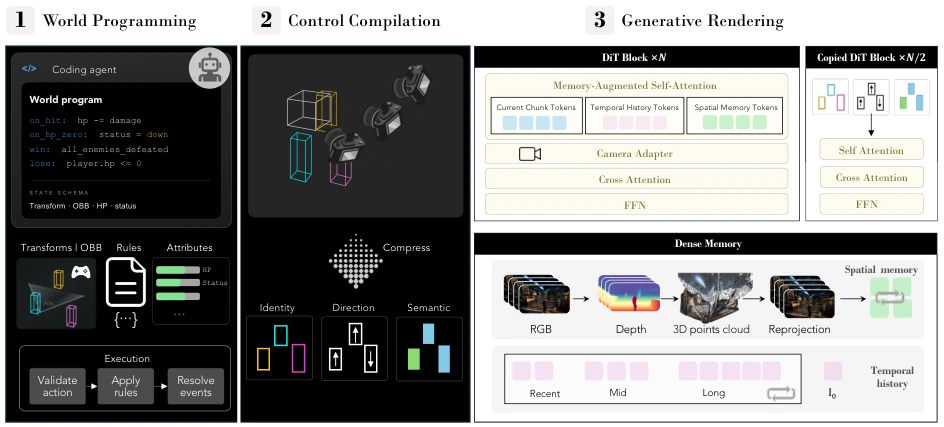
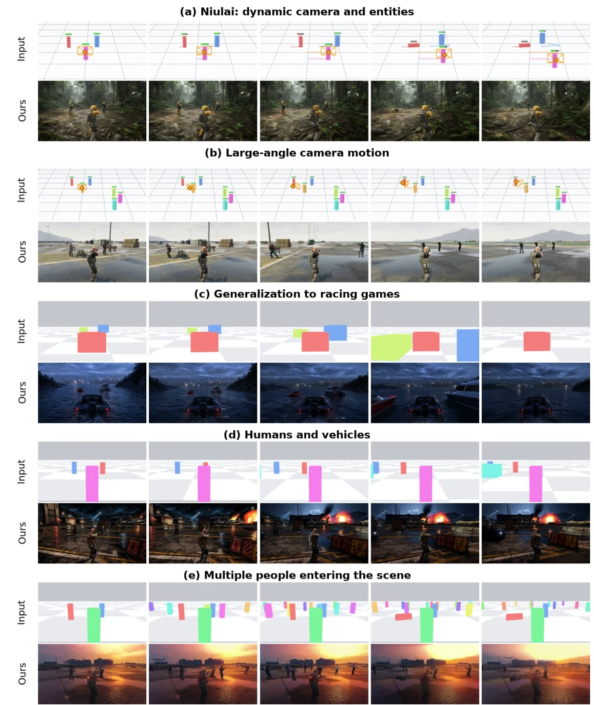

Figure 2 State representation trade-offs. Candidate representations range from lightweight semantic descriptions to detailed geometric structures [11]. Greater structural detail enables finer-grained control but increases the cost of training-data annotation and inference-time state construction and evolution. Moreover, representations extracted from observations or recorded from engines during training may differ from those constructed programmatically at inference time, creating a potential training–inference mismatch. We adopt state-augmented 3D OBBs as an intermediate abstraction that supports explicit world-space control while leaving fine geometry, articulation, and secondary visual dynamics to the generative renderer.
Figure 1 Overview of the programmable world model. Given a single reference image and a user description, a coding agent generates executable programs that specify entity states and interaction rules. A lightweight engine executes these programs to maintain and evolve an explicit world state, represented by state-augmented 3D OBBs. This representation is compiled into conditioning signals for a generative renderer, which produces realistic visual observations consistent with the world state. This design allows users to create playable games by defining game mechanics in advance, directly controlling individual entities, and maintaining persistent world state throughout gameplay.

Figure 3 Architecture of the programmable world model. (1) Agent-orchestrated world programming starts from natural- language specifications to instantiate an executable canonical world state, which is maintained and advanced by a lightweight engine according to player actions and world rules. (2) Control compilation projects state-augmented 3D OBBs under the target camera into pixel-aligned identity, semantic, and motion-direction controls. (3) Generative rendering conditions a pretrained camera-controlled video generation model on these structured controls and visual history to synthesize the next video chunk. Completed chunks are incorporated into temporal and geometry-aligned spatial memories to support long-horizon generation.
Figure 4 Qualitative comparison of entity-death interactions over five generated frames. We compare LingBot-World-v2 and YUME with our method under (a) a static camera and (b) a dynamic camera with moving entities. The input rows visualize the structured control signals provided to our renderer. Our method follows the specified death events while preserving the remaining entities and the scene evolution.

Figure 5 Additional qualitative results shown at five selected time steps. (a) Generalization to a novel minotaur scene with dynamic camera and entity motions. (b) Under a large-angle camera rotation, the model preserves scene consistency and correctly reveals characters located behind the initial camera view, following the persistent world state maintained by the engine. (c) Generalization to a racing game with moving cameras and vehicles. (d) Joint rendering of heterogeneous object categories, including humans and vehicles. (e) Selected frames from an 897-frame autoregressive sequence in which many NPCs progressively enter the scene. The input rows visualize the global scene state in (a)–(b) and camera-view 3D OBB maps with ground-grid references in (c)–(e). The generated results consist